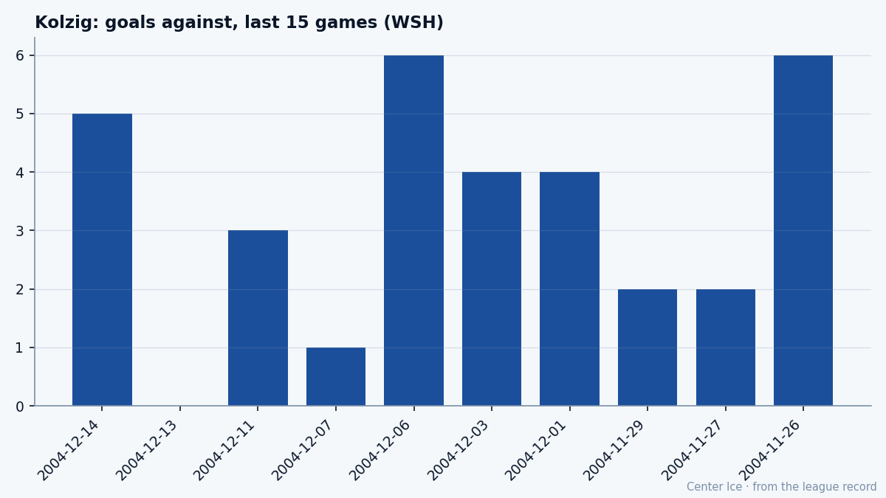

WSH
WSHKolzig, at 34: what the Book says, what the room says
The Vezina is on his shelf, the record reads 14-14, and the last 10 games tell a story the box score buries.
 Tomáš VránaProfile writer · The Sweater
Tomáš VránaProfile writer · The SweaterHe got the zero on a Tuesday. Two days after telling The Tunnel's Jan Kowalczyk that he was "used to waiting,"  Olaf Kolzig89 watched 32 shots go by him in a 4-0 win over
Olaf Kolzig89 watched 32 shots go by him in a 4-0 win over  Phoenix Coyotes and let the net go silent for 63 minutes. He had said the win mattered more than the number. The number, it turns out, was two days away.
Phoenix Coyotes and let the net go silent for 63 minutes. He had said the win mattered more than the number. The number, it turns out, was two days away.
The .500 record makes this season look like a step back. Last year Kolzig went 35-31 in 70 games, took the Vezina, and the whole league knew his name in the context of a trophy. This year the line reads 14-14 in 29 games, 3.35 goals against average, and the Book has him at 92 overall with 0 on the Development Index. A fine year from a fine goalie who is 34 and from Johannesburg and has been doing this for 15 seasons.
The last 10 games say something else.
The trend the .500 buries
Seven wins in his last 10 starts. A shutout of Phoenix on December 13. A 5-1 win over Buffalo on December 7, where he told Kowalczyk: "On the road you take the win, you don't complain. The boys, they score early, and for me it is, it is easier game." A 4-3 over Anaheim on December 11. Four of his last five starts came in at 3 goals against or under.

The 3.35 GAA over 29 games includes a 6-5 overtime loss to Atlanta on December 6, a 6-4 loss to Toronto on November 26, and a 5-2 loss to St. Louis on December 14. Strip those three and the number drops. The .500 is not a regression. It is a sample that hasn't caught up with the last two weeks.
| Season | GP | W-L | SO | GAA | MPG |
|---|---|---|---|---|---|
| 2003-04 | 70 | 35-31 | 0 | 3.16 | 60.2 |
| 2003-04 playoffs | 9 | 6-3 | 0 | 2.87 | 58.1 |
| 2004-05 (to Dec 17) | 29 | 14-14 | 1 | 3.35 | 63.0 |
The shutout column is the one that matters for the narrative. He had zero last season in 79 combined games. This year, in his 29th start, he finally got one. At 34, the zero costs more than it used to.
The long way to the net
Kolzig was born in Johannesburg in 1970, came up through Tri-City in Washington state, and scored a goal for them on November 29, 1989, the same year the Capitals took him 19th overall. He played one NHL game in 1989-90, went back down, and stayed down. The Pirates. The Butterfield Trophy and the Hap Holmes Award in 1994, the AHL's two big honours, both in the same spring. Then the backup years: behind Jim Carey in 1995-96, behind Bill Ranford in 1996-97. When Ranford went down in the first game of 1997-98, Kolzig took over and never gave it back.
That is the road: five years in the minors earning the right to be in the room, then the right to start when the starter broke. The Vezina last season was the cap on that, the year the backup became the guy and the numbers caught up with the belief.
What the room says
The room in Washington is quiet about the Vezina. Nobody counts. The Capitals sit 14-11-4, 36 points, 7th in the East, 6-6 at home and 10-9 on the road. They are a team that wins on the road more than at home, which means Kolzig's best games are the ones in other people's buildings where the ice is different and the fans are not on your side. He told Kowalczyk after the Buffalo game: "If we want to be there in April, we must win more on the road. Tonight is a step, you know."
In front of him,  Jaromir Jagr90 is having a season. 63 points in 31 games, 22.6 minutes a night, the best winger in the league doing what he does.
Jaromir Jagr90 is having a season. 63 points in 31 games, 22.6 minutes a night, the best winger in the league doing what he does.  Peter Bondra87, 36, adds 52 points in 26 games and has been doing that for 15 years.
Peter Bondra87, 36, adds 52 points in 26 games and has been doing that for 15 years.  Sergei Gonchar85 on the blue line gives Kolzig a clean lane. The room doesn't need Kolzig to be extraordinary. It needs him to be the same guy who has been there since 1997-98, the one who takes the early lead, holds it, and doesn't make a save he didn't expect.
Sergei Gonchar85 on the blue line gives Kolzig a clean lane. The room doesn't need Kolzig to be extraordinary. It needs him to be the same guy who has been there since 1997-98, the one who takes the early lead, holds it, and doesn't make a save he didn't expect.
His contract runs three more years at $6.20M a season. No arbitration, no cap pressure, no July deadline that makes the room tense. He is not playing for the deal. He is playing for the next shift.
The number that doesn't matter
The Book has him at 92, which is his base. The Development Index reads 0. He is the man in the middle of the chart, the one whose line doesn't move. Morale 99. The highest in the league, or close to it. A man who is not performing for the record is a man who is performing for the next puck.
Kolzig told Kowalczyk this: "You play long enough, people think you get, uh, tired of it. No. The puck drops, I want to win. Same in Buffalo, same in Washington. Maybe my body is different, but this part, this is same."
The Vezina is on a shelf in his house. The .500 is in a spreadsheet. The shutout was on the scoreboard in Phoenix, and in two days nobody in the room will mention it. He just works.